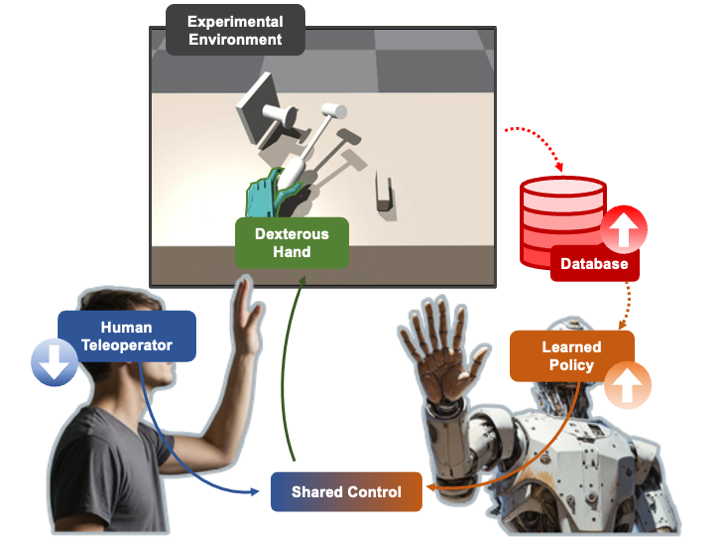
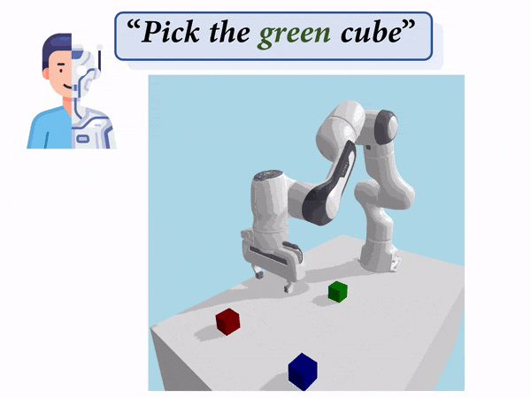
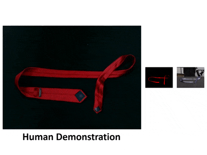
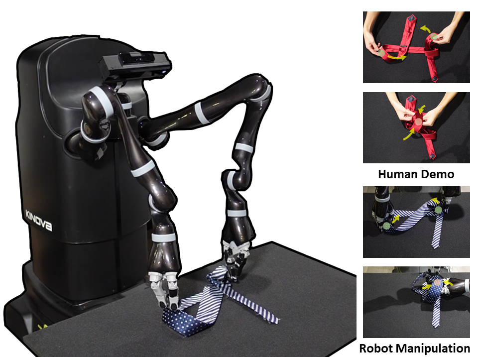
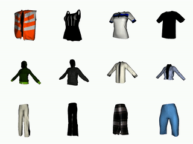

|
I am a Ph.D. candidate at Shanghai Jiao Tong University (SJTU). Currently, I am a member of Machine Vision and Intelligence Group (MVIG) under the supervision of Prof. Cewu Lu. I received my Bachelor's degree from Shanghai Jiao Tong University in 2020. I also spent time with Prof. Lin Shao at NUS on my projects. My research interests include Robotics, Artificial Intelligence and Computer Vision. Email / Wechat / Twitter(X) / Github / Google Scholar |

Bibtex copied to clipboard!
|

|
Preprint |
|

 |
Preprint |
|

 |
Conference on Robot Learning (CoRL) 2024 üîäOral Presentation |
|
|
Conference on Robot Learning (CoRL) 2023 üîäOral Presentation |
|

|
IEEE/CVF International Conference on Computer Vision (ICCV) 2023 |
  |
Robotics: Science and Systems (RSS) 2023 üî•Best System Paper Award Finalist International Journal of Robotics Research (IJRR) |
|
|
IEEE/CVF Conference on Computer Vision and Pattern Recognition (CVPR) 2022 üîäOral Presentation |
  |
IEEE International Conference on Robotics and Automation (ICRA) 2022 |
  |
British Machine Vision Conference (BMVC) 2021 |
 |
IEEE International Conference on Robotics and Automation (ICRA) 2020 |
-
Conference Reviewer:
- IEEE International Conference on Robotics and Automation (ICRA)
- IEEE/CVF Conference on Computer Vision and Pattern Recognition (CVPR)
- IEEE/RSJ International Conference on Intelligent Robots and Systems (IROS)
- IEEE/CVF International Conference on Computer Vision (ICCV)
- European Conference on Computer Vision (ECCV)
- AAAI Conference on Artificial Intelligence (AAAI)
-
Journal Reviewer:
- International Journal of Robotics Research (IJRR)
- IEEE Robotics and Automation Letters (RA-L)